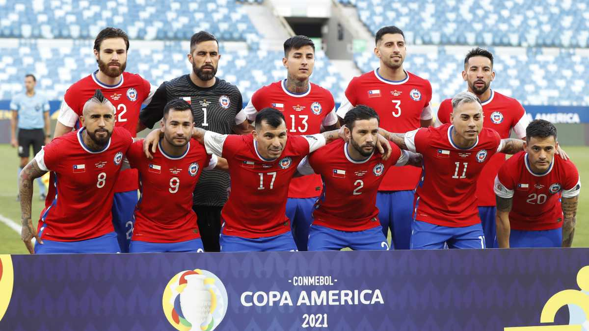
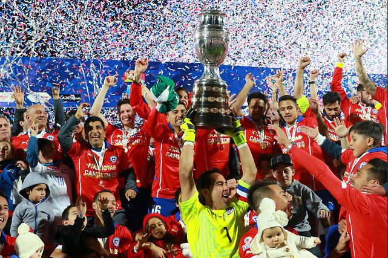
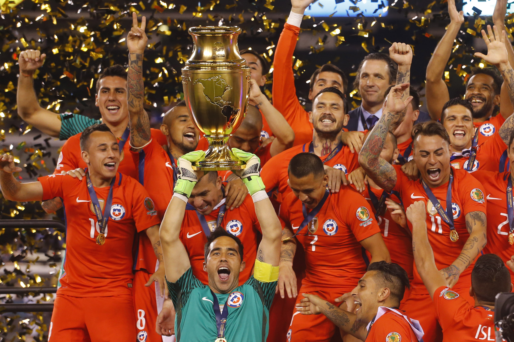

Equipo
La selección de fútbol de Chile, también conocida como la Roja, término afianzado en la década de 1980, es el equipo representativo de dicho país en la categoría masculina de fútbol, la tercera selección nacional más antigua de América y una de las veinte en el mundo

Copa America
La Copa América 2015 fue la cuadragésima cuarta edición de la principal competencia futbolística entre selecciones nacionales de América del Sur. El torneo fue organizado por la Conmebol, ente administrador del fútbol en Sudamérica y órgano del fútbol afiliado a la FIFA, y se llevó a cabo por séptima vez en Chile entre el 11 de junio y el 4 de julio.

Copa Centenario
La selección de Chile fue uno de los 16 equipos participantes en la Copa América Centenario, torneo que se organizó en Estados Unidos entre el 3 de junio y el 26 de junio de 2016.
